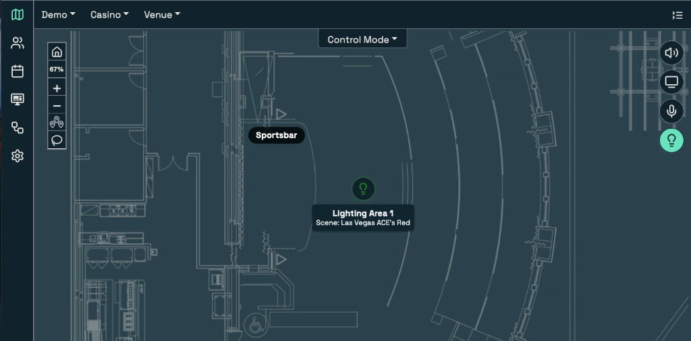

Light second-person pass: you/your for prospect team actions and choices; third person kept for scene-setting openers, named case stories, and LUCI/systems as subjects. Click a title in the bar to jump.
Locked — final copy. Read-only from spotlight-morning-reset.md. Editable REVIEW chrome removed Sep 29.
Morning reset
Start the day on a known look
Casino and resort floors rely on A/V to set the opening environment across displays, sources, and audio zones. But every shift change leaves decisions behind: a source changed for an event, a volume raised for a busy room, or a display left on after the audience moved on.
By morning, the floor may still reflect the night before instead of the day ahead. Your A/V and operations teams must determine what changed, what should still be running, and what needs to return to normal. Opening becomes a hassle to make sure everything is set up to deliver an optimal guest experience.
One of our customers was telling us about the occasional surprise he had waiting for him on his morning floor walk. Several TVs near the pits would get switched to a late ballgame overnight. The game itself was gone by morning, but the screen was still playing the same channel — and sometimes it had landed on Judge Judy. He used to walk the pits as soon as he arrived to make sure guests weren't encountering this before he did. He'd change the screens by hand before the floor was ready for the day.
A LUCI feature called a morning reset ends that negotiation. In LUCI, you can establish the audio, video, and lighting the floor should open with, save that state, and schedule it to run each morning so the property returns to your opening look before the day begins, including restoring the:
intended sources;
selected display looks;
correct audio zones; and
opening volume levels.
The entire reset runs from LUCI so you do not have to inspect every display or retrace the previous shift’s changes across separate controls. The move is direct:
Your staff choose the opening preset.
They apply it.
LUCI returns the floor to your selected state.
If needed, you automate the reset to take place every morning at a specific time.
That changes the opening conversation. Your staff can do a quick walk to verify in the morning, but with no fire drills to get an off-brand show off the screen. A known state also gives your managers a clear standard across teams: the opening look belongs to the operation, not to one person’s memory.
Opening is not the only time that standard matters. Events, promotions, and last-minute changes can move a room away from its normal look. After the event ends, your staff need a defined point to return to. The same reset gives them that point without turning the close of one event into a manual setup for the next shift.
The result is consistency across shifts and a continuously engaging guest experience, which is exactly what we built LUCI for.
LUCI orchestrates all of your A/V from a single interface your team controls from anywhere. We make it easy to control, automate, and execute any production you want to create for your guests.
Two outcomes matter most here: Your teams get a shared control point instead of resetting systems one by one. Guests get an optimal, branded experience no matter when they enter your property.
If you want to see a morning reset on a floor like yours, we can walk you through it in a short demo.
Source brief: spotlight-morning-reset.md
Lighting through LUCI
Lighting lives with the rest of the A/V
Guests read a room as one environment. Lighting, displays, and audio land together, and any change in one changes how the whole space feels.
You often have to run that environment on separate control paths, with lighting on its own console and the rest of the A/V somewhere else. Your staff have to leave the main interface, work another system, and manually keep the lighting look in step with display and audio changes. When that coordination slips, the room does not change as one room. It changes in pieces.
LUCI brings lighting into the same interface as displays, audio, and sources. Your staff can call a lighting look, select the zone that needs attention, and adjust levels in context with the rest of the room. LUCI works with and absorbs the systems already on the floor, so lighting joins the wider A/V operation instead of staying on a separate console.

Lighting looks and zones sit on the same map as the rest of the floor.
That matters most during live room changes. When a space moves from everyday programming to an event, your staff can:
call the lighting look for the room;
switch displays to the event source; and
put the audio zones in the required state.
Each system still performs its own job. The change is operational: your staff run it from one interface, in the order the guest experience requires.
Guests notice when a room holds together. They do not separate lighting from screens from sound. They read the space as one environment, and the experience is stronger when those changes arrive together.
That is why lighting belongs inside the same A/V operation as the rest of the room. Your staff no longer have to leave the main interface to keep the lighting look aligned with the display and audio change. LUCI gives you one operating point for the room, and your guests get one coherent experience instead of a handoff between systems.
If you would like to see that on a floor like yours, we can show you in a short demo.
Source brief: spotlight-lighting.md
UNFINISHED — In Progress. Only Wave 1 item still open for Jane.
Revert preset
Hold the event look. Revert when it ends.
When you change your A/V settings for a specific event—sources, levels, zones, and displays set for the moment—the room leaves its ordinary settings. When the event ends, you have to get it back to its previous state as soon as possible. Without a defined point of return, you end up scrambling to remember where your sources sat before the change. And you might end up just guessing.
A revert preset in LUCI is that defined return. We built this feature to give our customers a smooth entry and exit from temporary A/V changes they can run from LUCI. When you activate a preset, LUCI automatically snapshots the state in place before the change. If you enter a hold time, LUCI keeps that snapshot and reverts the room after the allotted time. If you leave the hold time blank, LUCI does not schedule a timed revert from that snapshot.
The move is three parts of one feature:
You activate the preset—LUCI snapshots the before state.
You enter a hold time when you want the room to revert after a set duration.
When the hold expires, LUCI restores the snapshotted state across the controls brought into the interface.
That covers the moments that matter most on a live floor. After a tournament, a promotion, or a short guest activation, you do not have to reconstruct where every source and level sat. The return is already built into the preset activation.
Timed holds are useful for short-lived looks as well. A two-minute promo on selected displays can run for two minutes and then revert to the programming that was already in place. You set the duration when you activate the preset; the room does not wait for someone to remember to switch it back.
The same protection also helps when you want to try a different look while the floor is live. You activate the proposed change, put a hold on it if you want an automatic return, and LUCI has already captured the prior state. That use remains available—it is just not the only reason for a revert preset.
LUCI works with and absorbs the A/V already on the floor. It does not replace the displays, audio, sources, or control systems you use. The revert acts across those controls in one place, so the return is not a separate job on each system.
When an event ends or a timed look expires, the prior state is still there. Your A/V and operations teams get a defined way back without rebuilding the room by hand.
Seeing a hold-and-revert cycle in a short demo makes the workflow concrete for your A/V and ops leads.
Source brief: spotlight-revert-preset.md
Announcement volume
Not every announcement should be the same volume
Casino and resort audio systems carry messages with very different jobs. A bingo call, an emergency page, and “the buffet is open” demand different levels of attention, but many properties still send every announcement through one building-wide volume setting.
That setting creates a false choice:
Set every announcement loud enough to cut through, and routine messages become intrusive.
Keep every announcement restrained, and critical pages may fail to command attention.
One setting cannot express the difference. This is not a speaker problem. The audio system can deliver the page; you need to determine how each page should behave. Volume and scope should follow the job of the announcement, not the last position of a building-wide slider.
LUCI assigns announcement levels by job instead of relying on one slider for the building. A routine page can use one level. An emergency page can use another. The level belongs to the announcement, much as a look belongs to a zone.
Your A/V and operations teams can define how each announcement should work:
Keep routine messages at a routine level.
Scope a guest update to the room it serves.
Let a critical page reach the areas where it must be heard.
You assign the treatment before your staff need the message. In the interface, your staff select the announcement; LUCI applies the level and scope assigned to that job.
That changes the decision your staff make in the moment. They select the message they need instead of adjusting a general setting, sending the page, and trying to return the building to its prior level. You have already decided how that announcement should behave.
The distinction also protects the purpose of each message:
A routine announcement can inform without taking over the room.
A room-specific update can stay with the guests it serves.
A critical page can command attention where you require it.
The result is direct: guest-facing A/V matches the message. Your staff no longer have to make unrelated announcements compete at one permanent setting or improvise the treatment every time someone sends a page.
LUCI works with and absorbs the audio system already on the floor. It does not replace the speakers, amplifiers, paging infrastructure, or other A/V you have selected. LUCI brings those controls into one operating interface, including the level and scope of each announcement.
A walkthrough starts with your existing operation:
the zones and paging paths already in the building;
the routine and critical announcements your staff send;
the areas each message needs to reach; and
the levels you assign to those jobs.
The LUCI team maps that operation, then demonstrates how your staff select an announcement and LUCI applies its defined treatment.
Book a walkthrough. Hear how announcements are scoped in LUCI.
Source brief: spotlight-announcement-volume.md
Ameristar
Ameristar Council Bluffs: a retrofit the floor never saw
Casino A/V retrofits create a direct operational problem: the property needs new infrastructure, but the floor still has to serve guests. Ameristar Council Bluffs shows how a team can complete that transition without turning the retrofit into a shutdown.
Ameristar Council Bluffs in Council Bluffs, Iowa, completed a full A/V retrofit in under three days. The floor never closed.
The duration matters because the operation continued. LUCI staged the work around a live floor instead of asking the property to suspend the operation the new A/V was meant to support.
The retrofit solved the immediate assignment and prepared the property for its next phase:
The team completed the full A/V retrofit in under three days.
The floor remained open throughout the work.
A/V processing moved from the riverboat into the IT data center on land.
The new buildout can connect to the platform already running there.
Moving the processing inland established a clean boundary for what comes next. The boat can retire without forcing the property to carry its former processing location into the new buildout. When that phase arrives, the property can connect it to the platform already operating from the land-based data center instead of starting the A/V operation over.
Taken together, the retrofit and the move inland form one operational decision: keep the floor running now while establishing where control will live next. The installation window served both the current operation and the transition ahead.
The Facilities Manager’s response, published in the case study, is concise: “Well done, LUCI team! This was the best installation — so seamless.”
For A/V, IT, and operations leaders considering a retrofit, Ameristar raises three questions before anyone approves the schedule:
Can the team complete the work around a live floor?
Where should A/V processing live after the property changes?
Will the next buildout connect to the existing operation, or add another operating system beside it?
Those questions belong together. A short installation window is not enough if the work interrupts the floor or leaves the property with another isolated system. A future-ready processing location is not enough if the current operation cannot reach it. The retrofit has to protect today’s floor and establish a usable path into the next buildout.
LUCI worked with the property’s A/V and brought its controls onto one platform. It did not replace the systems on the floor. The case is about continuity through the retrofit, the move from riverboat to land, and the buildout ahead.
The full case study shows how the team staged the work, kept the floor open, and moved processing to land. Read the Ameristar Council Bluffs case study. Then book a walkthrough to see how LUCI would work with the A/V already in your building.
Source brief: case-blog-ameristar.md
Tachi Palace
Tachi Palace: a room done in a week, a foundation for the rest
Casino and resort teams often need one room operating now without creating another isolated A/V system. Tachi Palace Casino Resort faced that choice in its bingo hall: finish the immediate assignment while building a foundation the rest of the property could use later.
At the Lemoore, California, property, the team completed the bingo hall in one week. The room brought together:
eight LED video walls;
audio zones;
an immersive bingo environment; and
one interface to run it.
That scope makes the operating point concrete. Staff do not run eight walls and the room’s audio as separate controls. They run them together through LUCI. The property gained a complete bingo hall without creating an interface that ends at the room’s doors.
A one-off room would have solved the schedule and added another system to the property. Tachi Palace took a different path. The bingo hall became the first part of a wider operation, so future growth can start from the platform already running.
LUCI works with and absorbs the A/V already in the building; it does not replace those systems. Displays, audio, and sources become part of one operating picture, even when the property brings rooms onto the platform in phases.
This approach separates the construction schedule from the operating model. Tachi Palace completed the bingo hall in the window it had without defining that room as the limit of the platform. The property did not have to choose between finishing one room now and preparing for the rest of the resort. The one-week assignment and the longer property plan could move on the same foundation.
The distinction appears after installation. Staff have a complete room to run today, but the interface is not a dead end. When the property adds another space, the operating model can extend beyond the bingo hall instead of forcing teams to learn and maintain another isolated control path.
For property A/V, IT, and operations leaders planning phased growth, the project sets a clear test:
The first room must perform as a complete room.
Staff should operate its systems from one interface.
The next phase should extend the operation instead of introducing another path.
That test keeps the immediate project honest. Speed matters, but the property also has to live with the operating decision after the construction team leaves. A room that joins the wider operation gives the next phase somewhere to start.
The live case study carries the full account. This is the door to it: one week, eight LED video walls, audio zones, immersive bingo, and one interface, with a foundation that extends beyond the room.
Read the Tachi Palace case study. Then book a walkthrough to see how a room can join the A/V already running across your property.
Source brief: case-blog-tachi.md
Sam’s Town
Sam's Town: a wall that big, on the platform already running the house
When a casino adds a large LED wall, the operating decision matters as much as the display. If the wall arrives with its own control path, property staff inherit another interface, another workflow, and another boundary inside the A/V operation.
Sam’s Town Hotel & Gambling Hall in Las Vegas took a different approach. One 480-square-foot LED replaced a collection of mismatched TVs, and the new wall joined the platform already running the property.
The project changed what guests saw without adding a second operating model for staff:
One LED replaced the mismatched TV collection.
The wall appeared inside the interface staff already used.
Staff did not have to learn a second system.
The property kept one operating path for the room.
The visible change is the wall. The operational change is what Sam’s Town did not add. The property gained a new display surface without dividing the room between the A/V already there and the A/V that arrived with the wall.
LUCI worked with what was there; it did not replace the property’s A/V. LUCI absorbed the new wall alongside the displays, audio, sources, and controls already in the building. Staff continued to operate the room through the same interface.
That continuity is the central point. A major visual change did not require a parallel operating model. The wall became part of the house instead of a separate system beside it. Staff gained a new surface to operate, but they did not gain another place to operate it.
The difference reaches beyond training. A second control path would divide responsibility whenever the room changed: one workflow for the wall, another for the systems around it. By bringing the wall into the existing platform, Sam’s Town kept the room inside one operating picture.
For A/V, IT, and operations leaders, the Sam’s Town project reframes the planning questions:
Will the wall join the property’s current operation?
Will staff control it from the interface they already use?
Will the installation consolidate the room or create another silo?
Those questions should be answered before a property treats the display as an isolated purchase. The wall will be visible to guests, but staff will live with its controls, sources, and operating path every day. The platform decision determines whether the new surface joins the room or sits beside it.
The live case study shows the completed wall and the decision behind it. This short account is the reason to open that story: one 480-square-foot LED in place of mismatched TVs, joined to the platform already running the house.
If your property is treating its next wall as a separate A/V system, the new surface can instead join the operation already in place. LUCI brings it into the interface your staff already use.
Read the Sam’s Town case study. Then book a walkthrough to see how LUCI can absorb the next display into the A/V your staff already runs.
Source brief: case-blog-sams-town.md
Yaamava’
Yaamava’: everything on the property, one interface
Whole-resort A/V operations span rooms, venues, and systems that often run through separate controls. “One interface” only matters when it can carry that full property scope, not just one room or a demonstration that never reaches the floor.
At Yaamava’ Resort & Casino in Highland, California, the denominator is the property. One interface operates across:
broadcast content;
signage;
audio;
data;
displays; and
34 LED walls across seven venues.
That scope runs across a 290,000-square-foot resort.
Those facts define what “one interface” means here. It is not a control for one category of A/V. It is the operating point for systems that would otherwise remain separate across the resort.
The LED walls make the scale visible, but they are not the whole story. They operate alongside broadcast content, signage, audio, data, and other displays in the same picture. The property does not need one platform for the walls and another for everything around them.
LUCI works with and absorbs those systems; it does not replace them. The A/V selected for the property remains in place. LUCI gives property teams one interface to control, automate, and execute across it.
The categories matter as much as the count. Broadcast content, signage, audio, data, and displays do different work in different parts of a resort. Bringing them into one interface does not erase those differences. It gives staff one place to operate across them.
That is the practical test behind the phrase. Whole-resort control is not proven by showing that one screen can reach one type of endpoint. The interface has to carry the mix of systems, venues, and guest-facing changes that property teams actually run.
For property A/V, IT, and operations leaders, Yaamava’ sets a concrete standard for evaluating a whole-resort platform:
Count the venues the interface reaches.
Identify the A/V and content categories it operates.
Confirm whether staff can run that scope together.
This order matters. Start with the property’s operating scope, then assess the interface against it. A claim about one interface means little until the systems and venues behind that “one” are visible.
Yaamava’ provides that proof in public: 34 LED walls, seven venues, multiple categories of A/V and content, and a 290,000-square-foot resort run from a single interface. The numbers show what the interface is responsible for.
The live case study carries the full account. If your property has accumulated separate systems for broadcast, signage, audio, data, and displays, the question is not whether each system works. The question is whether your staff can operate them together without another isolated control path.
Read the Yaamava’ case study. Then book a walkthrough to see how LUCI would work with and absorb the systems already on your floor.
Source brief: case-blog-yaamava.md
What you may not know
What you may not know about LUCI
Most casino and resort properties already have A/V on the floor: displays, audio, lighting, sources, and control systems installed across different projects. The operating problem appears when staff have to coordinate those systems across separate interfaces. Prospects often assume LUCI solves that problem by replacing what the property owns.
It does not.
The A/V stays. LUCI works with and absorbs the systems already in the building, bringing their controls into one interface. LUCI is how you run the systems together, not a replacement for the systems themselves.
That distinction changes the first conversation. If you mistake LUCI for the stack, the discussion starts with a catalog of displays, speakers, controllers, and boxes. But your property is not an empty room waiting for someone to specify it.
The room is full. Your property has accumulated A/V over time, often across separate projects, interfaces, and operating paths. Each system may perform its assigned job. The problem appears when your staff have to run the property as a collection of systems instead of one operation.
A first look at LUCI should begin with your actual A/V:
What systems are already on the floor?
Which rooms require separate controls?
Where do your staff switch interfaces to complete one guest-facing change?
Which operating paths should come together?
The purpose is not to assemble a hardware shopping list. The purpose is to see the current operation in one place, then identify what changes when LUCI consolidates its controls.
The displays remain displays. The lighting remains lighting. The audio remains audio. LUCI gives you one interface to control, automate, and execute across them.
LUCI does not make the underlying systems interchangeable or erase the expertise required to operate A/V. It removes the need to treat every system boundary as an operating boundary. Your staff can work from a common picture of the property instead of reconstructing that picture across separate consoles.
In practical terms, you keep:
the displays, speakers, lighting, sources, and controls you selected;
the rooms and zones built around those systems; and
the A/V expertise required to run the environment.
LUCI changes how your staff reach and coordinate those systems. One guest-facing change no longer has to become a sequence of disconnected changes across separate interfaces.
That is what LUCI is—and what it is not. LUCI is not the wall, the speakers, the lighting, or a demand to replace them. It is the orchestration engine that brings the A/V already in the building into one operation.
The first walkthrough should reflect that. Bring the systems already on your floor, the rooms they serve, and the way your teams run them today. The conversation starts with your property, not a catalog.
Book a walkthrough. Bring the systems you already have.
Source brief: mike-01-blog.md
Sales one-pager
What LUCI is (and is not)
Your property already has A/V on the floor. LUCI brings those systems into one operating picture; it does not ask you to replace them.
Keep the A/V already on the floor. Displays, speakers, lighting, sources, and control systems remain in place. LUCI works with and absorbs them. It does not replace them.
Run separate systems as one operation. LUCI brings their controls into one interface so your staff can control, automate, and execute across the guest experience.
Map the operation you have. A first look identifies your rooms, systems, interfaces, and the places where one change crosses multiple controls.
See the property in one place. The walkthrough uses your A/V and operating priorities—not a catalog of new boxes.
The next step stays in the room: your A/V, one interface, and the questions that matter on your floor.